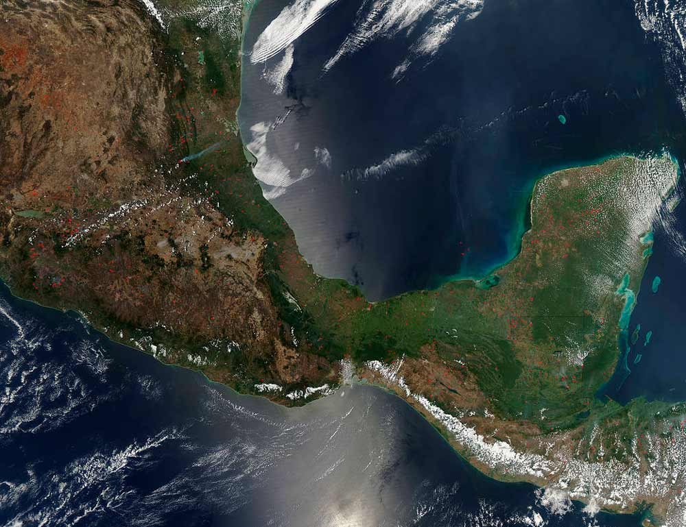

Inicio
Lista de plantas
Favoritos
Salva el mundo!
Bienvenido a Ecoversion
Descubre las especies de árbol nativas de tu comunidad

Mapa de México
Tips y consejos sobre jardinería
Conservación del agua